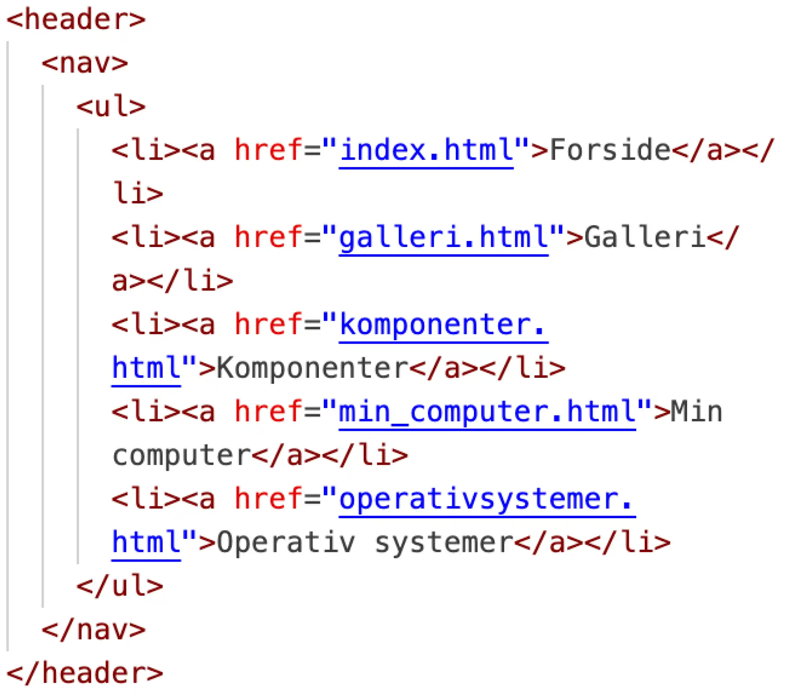
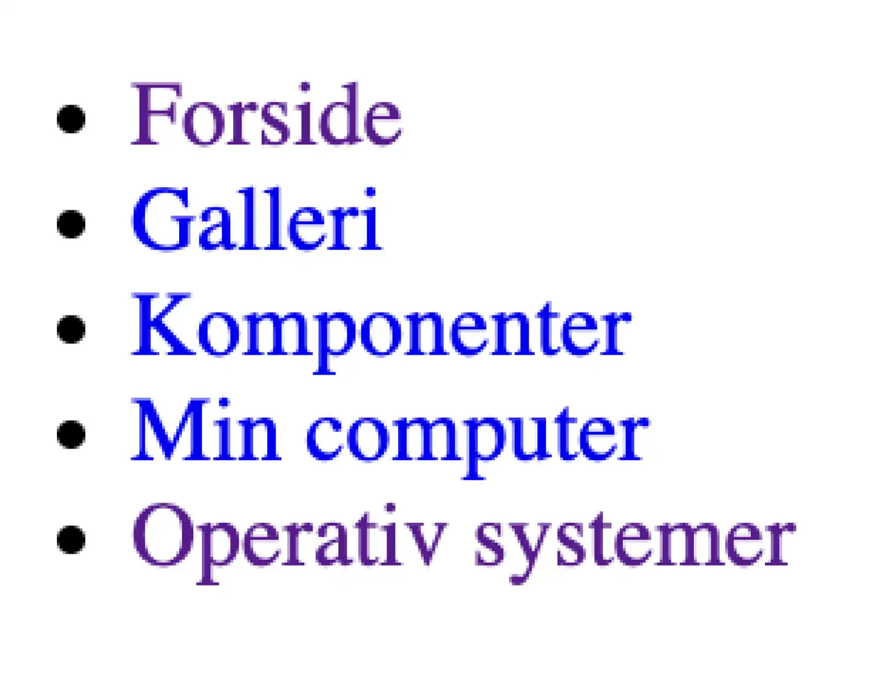
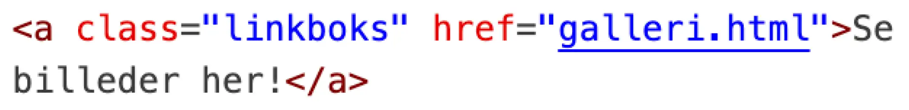
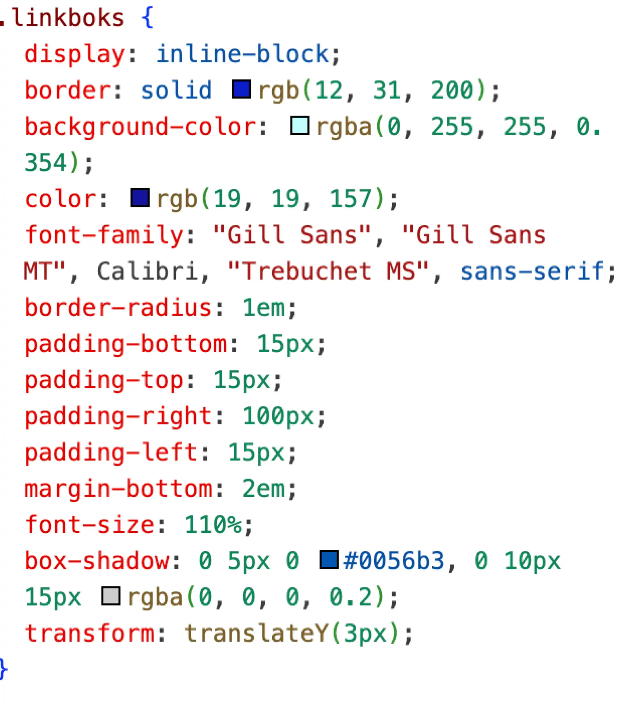
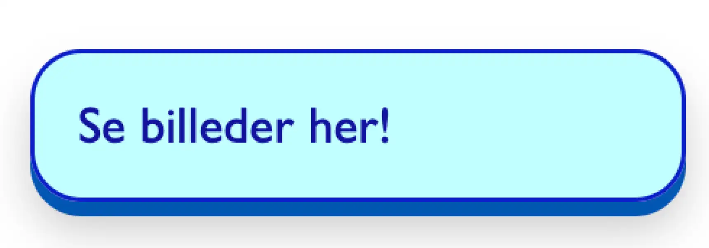

TEMA 2
GRUNDLÆGGENDE WEB
I dette tema var et af fokuspunkterne at få en forståelse for grundlæggende HTML og CSS. Vi blev introduceret til faglige begreber vedrørende design af digitale brugergrænseflader. Vi lærte hvordan man opstiller en hjemmeside med HTML og CSS,
og hvordan man laver et responsivt webdesign. Dette gjorde vi ved at opstille en hjemmeside fra bunden i HTML og CSS.
Forløbet bestod af to opgaver: Mobilsite og studiestartsprøve.
MOBILSITE
02.01.01
I Mobilsitet lærte vi at opstille en hjemmeside i HTML og CSS. En hjemmeside består bl.a. i HTML af en <body> som indeholder en <header>, en <main> og en <footer>. I <body> placeres alt det synlige indhold på hjemmesiden, som brugeren interagerer med. I <header> placeres indhold som fx. navigation, logo eller sidens titel. I <main> placeres sidens primære indhold som fx. artikler, tekst og billeder. I <footer> placeres indhold som fx. kontaktoplysninger, links til sociale medier eller privatlivspolitik.
EKSEMPEL PÅ KODE
På nedenstående billede ses det hvordan jeg har opstillet min <header> på Mobilsitet. Den indeholder en navigation <nav> med en liste <ul> af links <a> til de forskellige sider på Mobilsitet. <ul> (unordered list) indikerer at rækkefølgen af elementerne (<li>) tilhørende listen ikke har en specifik rækkefølge.
På nedenstående billede ses hvordan menuen ser ud på selve Mobilsitet.
*Tilbage til portfolio*

STUDIESTARTSPRØVE
02.01.02
I Studiestartsprøven byggede vi videre på Mobilsitet og den grundlæggende forståelse for HTML og CSS. Vi lærte bl.a. hvordan en class tilføjes i HTML, og hvordan den fx. kan påvirkes med CSS. Class bruges til at tildele et eller flere elementer en stil eller en funktionalitet ved hjælp af fx. CSS.
EKSEMPEL PÅ KODE
På nedenstående billede ses det hvordan jeg har lavet et link <a> og tildelt det klassen “linkboks”.
På nedenstående billede ses det hvordan jeg med CSS har stylet linket med klassen “linkboks”. Jeg har bl.a. tilføjet en baggrundsfarve, noget skygge og en ramme med runde kanter for i dette tilfælde at indikere en knap.
På nedenstående billede ses hvordan knappen ser ud på selve Websitet.
*Tilbage til portfolio*